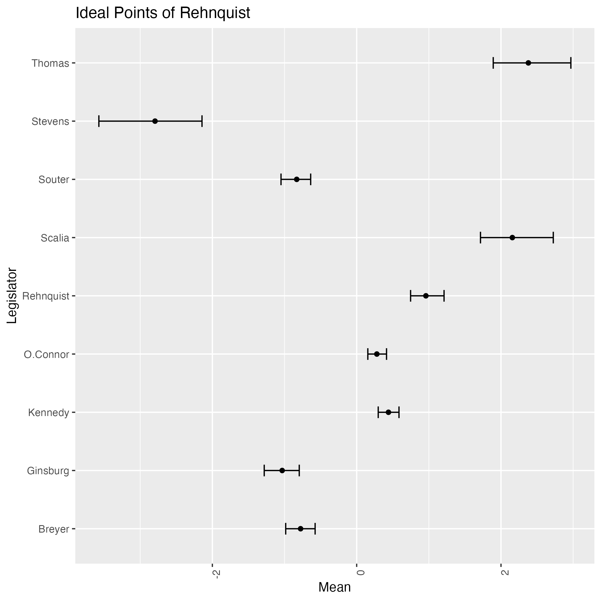
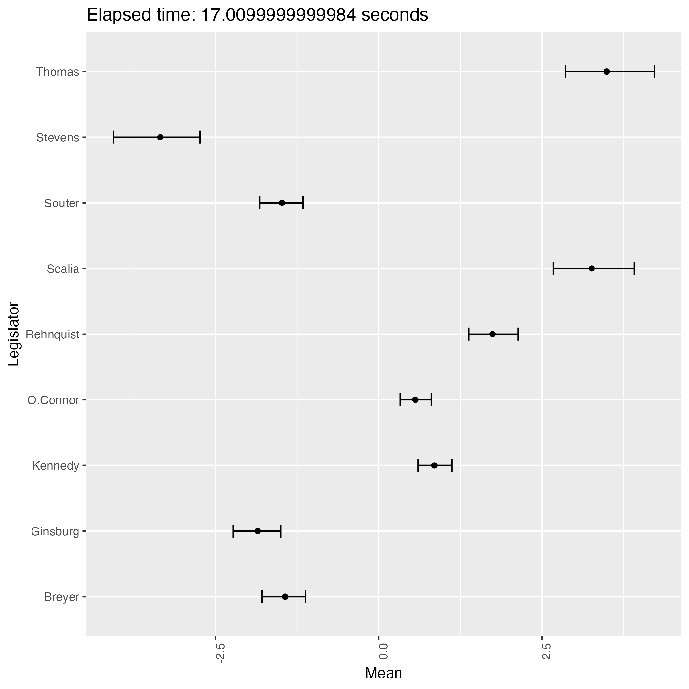
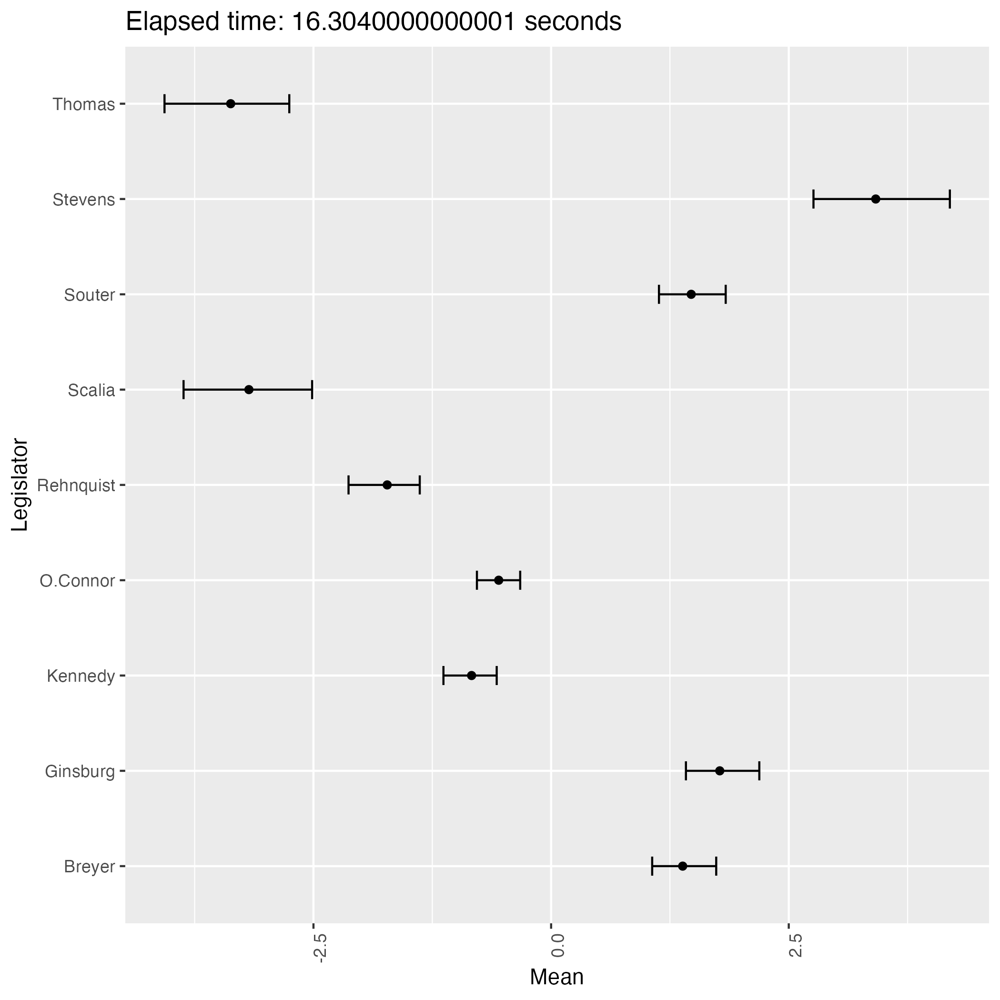
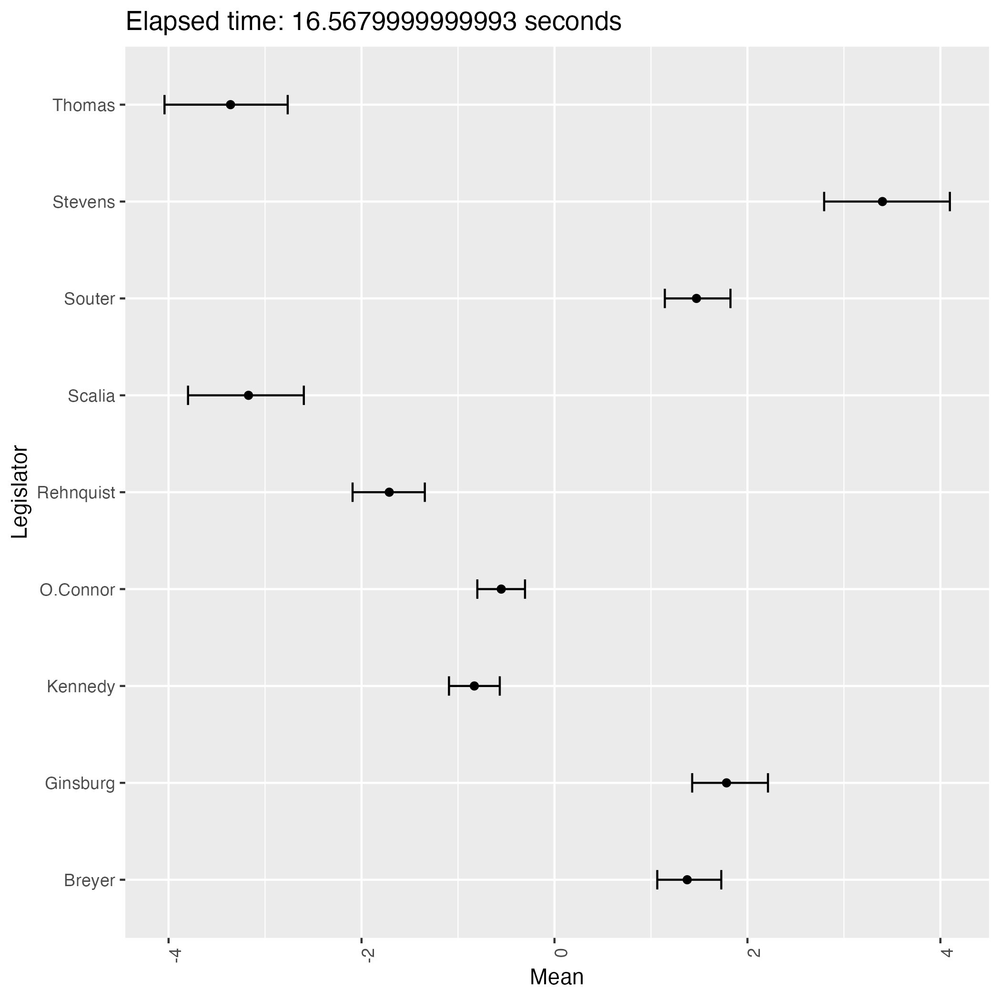
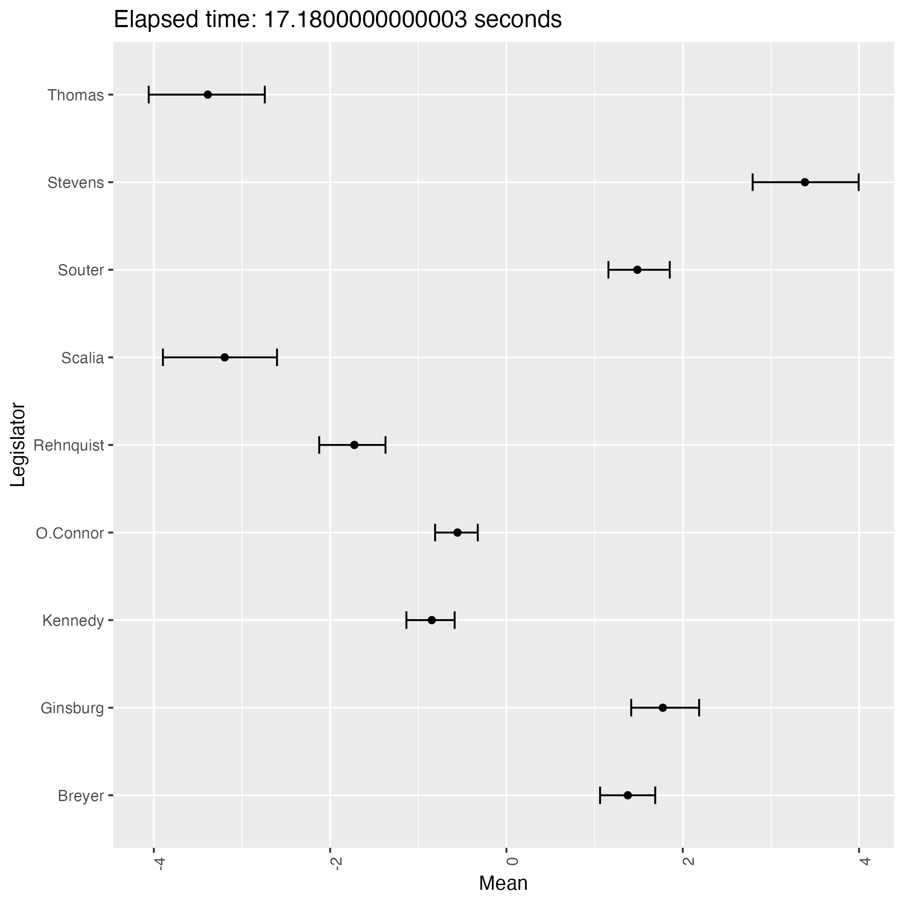

On the Identifiability of the Bafumi et. al. Ideal Point Model
Rethinking of the Hierarchical Model of Bafumi et. al. (2005)
Bayesian
Statistics
MCMC
R
Author
Hiforumi Shiba
Published
12/22/2024
Modified
12/23/2024
概要
Ideal point models are 2-parameter item response model, tailored to the purpose of visualizing / measuring the ideological positions of the legislators / judges. (Bafumi et al., 2005) introduced a hierarchical structure to the model to deal with the problem of identifiability. In this article, we re-examine the model and show that the posterior distribution of the parameters (ideal points) is still bimodal, indicating its weak identifiability.
A Blog Entry on Bayesian Computation by an Applied Mathematician
$$
$$
1 Introduction
1.1 The 2PL Model
Suppose we have a binary response variable \(Y_{i,j}\) for the \(i\in[N]\)-th judge and the \(j\in[J]\)-th case.
2-parameter logistic model (2PL) can be written as follows: \[
Y_{i,j}\sim\operatorname{Bernoulli}(\mu_{i,j}),
\tag{1}\]\[
\operatorname{logit}(\mu_{i,j})=\alpha_j+\beta_j X_i=:\beta_j\biggr(\widetilde{\alpha}_j+X_i\biggl).
\tag{2}\]
Although the model is called the 2PL model, we have three parameters \(\alpha_j,\beta_j,X_i\) in total, two for the cases \(j\in[J]\) and one for the judges \(i\in[N]\).
In IRT (Item Response Theory) vocabulary, we call \(\alpha_j\) the difficulty, and \(\beta_j\) the discrimination parameter of the \(j\)-th ‘item’.
\(X_i\) may be called the latent trait or ability parameter of the \(i\)-th ‘unit’ in that context, but here we call it the ideal point of the \(i\)-th judge.
1.2 The Problem of Identifiability
As (Section 2 Bafumi et al., 2005) nicely categorized, the above model has three sources of non-identifiability:
Sources of non-identifiability
Additive aliasing / base point indeterminancy
For any \(c\in\mathbb{R}\), the transformation \[
(\beta_j,\widetilde{\alpha}_j,X_i)\mapsto(\beta_j-c,\widetilde{\alpha}_j+c,X_i+c),\qquad c\in\mathbb{R},
\] does not change the likelihood.
Multiplicative aliasing / scaling indeterminancy
Same applies to the following transformation: \[
(\beta_j,\widetilde{\alpha}_j,X_i)\mapsto(c^{-1}\beta_j,c\widetilde{\alpha}_j,cX_i),\qquad c>0.
\]
Although all of the three problems may be settled by setting informative prior distributions to one of the \(\alpha_j,\beta_j,X_i\)’s, e.g., \(X_i\sim N(0,1)\), the authors (Bafumi et al., 2005) propose a different approach to the thrid problem, reflection invariance.
1.3 Resolution by Hierarchical Structure
(Bafumi et al., 2005) proceed to introduce a person(/judge)-level predictor \(Z_i\) to the model, i.e., \[
X_i\sim\mathrm{N}(\delta+\gamma Z_i,\sigma^2)
\] to indirectly inform the model of the correct sign of the ideal points.
Specifically, \(Z_i\in\{\pm1\}\) corresponds to the party of the nominating president of \(i\)-th judge; \(Z_i=+1\) corresponds to the Republican party, and \(Z_i=-1\) corresponds to the Democratic party.
In this way, (Bafumi et al., 2005) tried to guide the model & likelihood to have only one mode, where liberal judges would be on the left and conservative judges would be on the right on the \(X_i\in\mathbb{R}\) axis.
1.4 The Problem Remains …
Let us consider the data from the 1994-2004 terms of the U.S. Supreme Court here, although (Bafumi et al., 2005) used the data from the 1954-2000 terms. The data is available as Rehnquist via the MCMCpack package (Martin et al., 2011) in R.
Let us first see the ‘correct’ output from the model. The precise meaning of ‘correct’ will be clarified later in the next Section 2, along with the Stan codes.

A ‘correct’ output from bafumi_normal.stan
We see four judges classified as liberal, namely Stevens, Souter, Ginsburg & Breyer. The last two judges were nominated by Bill Clinton, a Democrat, while the first two were nominated by Republican presidents.
This result aligns with the common understanding of the Supreme Court justices. For instance, we quote a sentence from the wikipedia page of John Paul Stevens:
Despite being a registered Republican who throughout his life identified as a conservative, Stevens was considered to have been on the liberal side of the Court at the time of his retirement.
The similar situation applies to David Souter.
Here we notice that two liberal judges have \(Z_i=+1\), while the other two have \(Z_i=-1\). The predictive ability of the covariate \(Z_i\) is (presumably) weak during the 1994-2004 term.
Therefore, the information from \(Z_i\) about the sign of the ideal points may not be strong enough to resolve the identifiability problem. In that case, the posterior distribution would be bimodal. Indeed, this is the case, as we will see next.
2 Estimation by Stan
The 2PL model (1), (2) can be written in Stan as follows:
bafumi_normal.stan
data {int<lower=1> n; // n = N * J - #(NA responses)int<lower=1> N; // number of judgesint<lower=1> J; // number of casesarray[n] int<lower=0, upper=1> Y; // response variablevector[N] Z; // covariates for judgesarray[n] int<lower=1, upper=N> i; // indicator for judges i in [N]array[n] int<lower=1, upper=J> j; // indicator for cases j in [J]}parameters {vector[N] X; // ideal points for judgesvector[J] alpha;vector[J] beta;real delta;real gamma;}transformed parameters {real lprior = 0; lprior += std_normal_lpdf(delta); lprior += std_normal_lpdf(gamma); lprior += std_normal_lpdf(alpha); lprior += std_normal_lpdf(beta); lprior += std_normal_lpdf(X);}model { X ~ normal(delta + Z * exp(gamma), 1);vector[n] mu = rep_vector(0, n);for (k in1:n) { mu[k] = alpha[j[k]] + beta[j[k]] * X[i[k]]; }target += bernoulli_logit_lpmf(Y | mu);target += lprior;}
Using this Stan code, we run the following experiment, where we run 4 chains in parallel, each with 4000 iterations, 3000 of which are used for warmup. The chains are initialized randomly.
Files/experiment.r
for (i in1:100) { fit <-stan("bafumi_normal.stan", data = data, chains =4, cores =4, verbose =TRUE, iter =4000, warmup =3000) all_samples <-extract(fit, pars ="X")$X last_1000_samples <- all_samples[(nrow(all_samples) -999):nrow(all_samples), ] mean <-apply(last_1000_samples, 2, mean)if (mean[9] >0.5) { count <- count +1 }}print(count)
[1] 52
The following plots are some (first 9) of the results from the experiment.
Elapsed time: 16.99 seconds

Elapsed time: 17.01 seconds

Elapsed time: 16.30 seconds
Elapsed time: 15.00 seconds
Elapsed time: 14.98 seconds
Elapsed time: 15.06 seconds
Elapsed time: 16.42 seconds

Elapsed time: 16.57 seconds

Elapsed time: 17.18 seconds
We see that the result has two patterns and they are in symmetry with each other.
This phenomenon proves that the posterior distribution of the ideal points is bimodal, indicating the weak identifiability of the model.
3 Conclusion
(Bafumi et al., 2005)’s hierarchical resolution of the identifiability problem by the covariate \(Z_i\) will fail if the covariate \(Z_i\) is not informative enough.
In that case, the posterior distribution of the ideal points will be bimodal.
Copyright Hirofumi Shiba 2024. All Rights Reserved
Citation
BibTeX citation:
@online{shiba2024,
author = {Shiba, Hirofumi},
title = {On the {Identifiability} of the {Bafumi} Et. Al. {Ideal}
{Point} {Model}},
date = {2024-12-22},
url = {https://162348.github.io//posts/2024/TransDimensionalModels/Bafumi.html},
langid = {en},
abstract = {Ideal point models are 2-parameter item response model,
tailored to the purpose of visualizing / measuring the ideological
positions of the legislators / judges. {[}@Bafumi+2005{]} introduced
a hierarchical structure to the model to deal with the problem of
identifiability. In this article, we re-examine the model and show
that the posterior distribution of the parameters (ideal points) is
still **bimodal**, indicating its weak identifiability.}
}